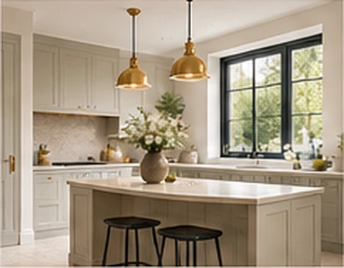
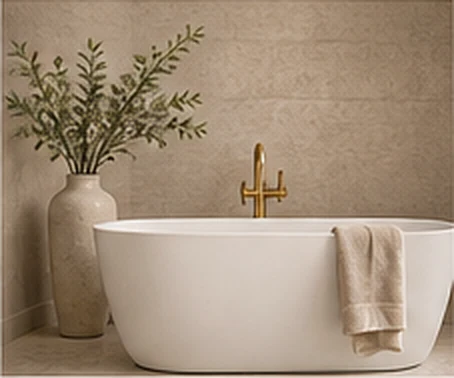
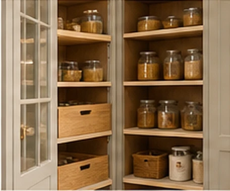
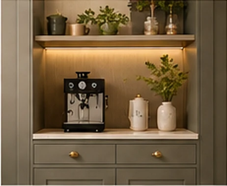
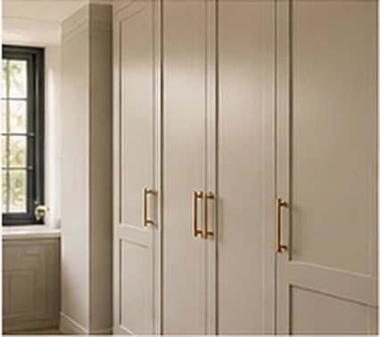
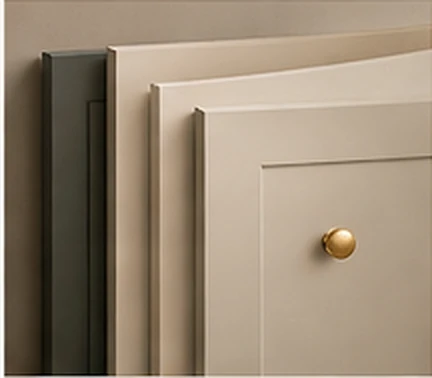

CONSIDERED CABINETRY
More room
for living.
Beautiful, made-to-measure kitchens, bathrooms and bespoke interiors for modern homes.
Explore our CollectionsExplore the Cabivella collections

KitchensTimeless kitchens, designed around the way you live.
BathroomsElegant, functional spaces for everyday luxury.
Pantry & LarderSmart, beautifully organised storage solutions.
Coffee StationsA dedicated space for your daily rituals.
Fitted StorageBespoke cabinetry for a calm and organised home.
Kitchen DoorsA curated range of styles, finishes and colours.
CabivellaSpaces,
considered.
considered.
A CONSIDERED APPROACHBeauty is found
Beauty is found
in the details.
A cupboard can hold the little things that matter most. We favour quiet proportions, practical storage and finishes chosen for the life of a room.
Explore materials and finishes ↗START A CONVERSATION
Make an enquiry ↗Tell us what you have in mind.
Whether you are planning a kitchen, a bathroom or a single cabinet, the best conversations begin with the room and its purpose.